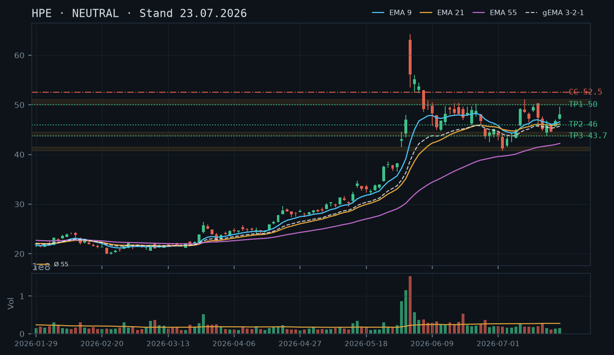
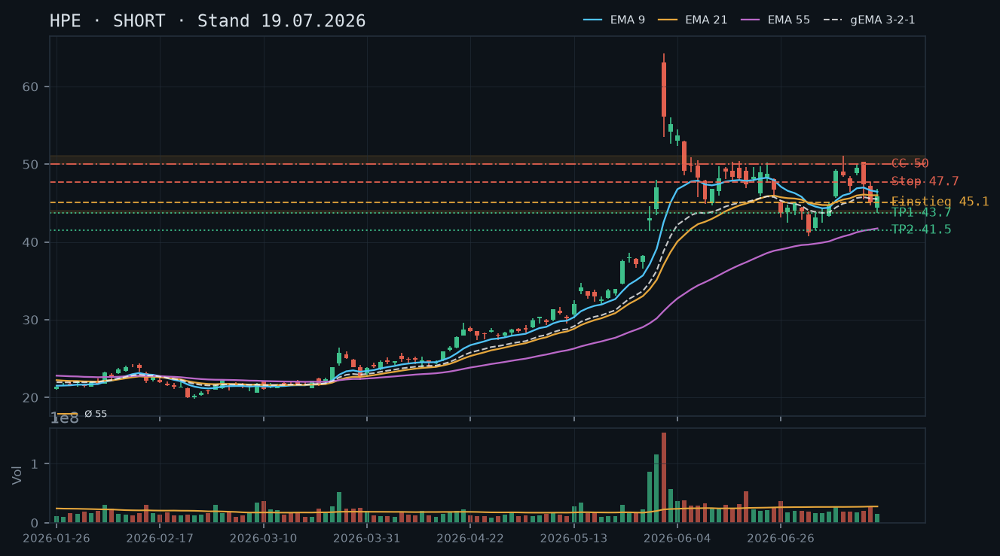
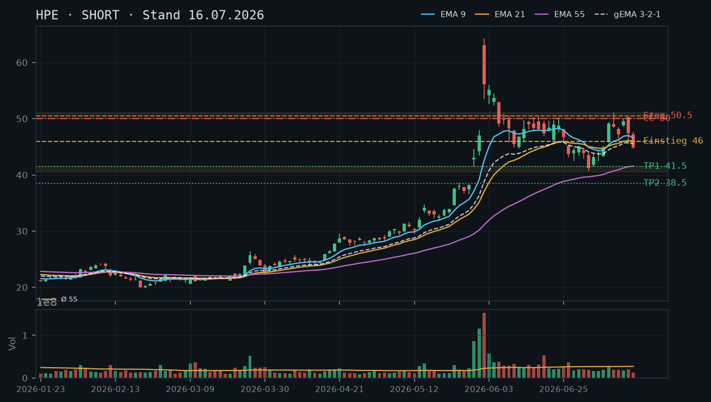
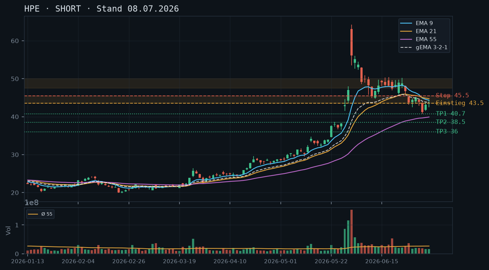

HPE zeigt nach dem Bounce von 41 USD einen überraschend starken Aufwärtsimpuls mit zwei bullischen Tageskerzen und Kursanstieg auf 48,41 USD – der Short-Bias der Voranalysen wird zunehmend herausgefordert, solange der Kurs unter 50–51 USD bleibt jedoch kein Trendwechsel bestätigt.

HPE befindet sich formal noch im übergeordneten Abwärtstrend vom parabolischen Top (~64 USD, 02.06.) mit einer Sequenz fallender Hochs (64,25 → 51,08 → 50,31 → 47,67) und fallender Tiefs (53,47 → 40,71). Der Bounce vom 02.07.-Tief bei 40,71 USD hat jedoch Fahrt aufgenommen: Das 09.07.-High bei 49,32 USD wurde zuletzt überboten – am 22.07. wurde ein Intraday-High von 49,68 USD markiert, der aktuelle Kurs liegt bei 48,41 USD. Entscheidend ist die Widerstandszone 50,00–51,08 USD: Solange diese nicht nachhaltig gebrochen wird, bleibt der übergeordnete Trend bärisch mit einem noch nicht bestätigten kurzfristigen Erholungsimpuls. Ein Close über 51,08 USD würde die Hochs-Tiefs-Struktur kippen und wäre ein echter Trendbruch-Signal.
Die letzten drei Kerzen zeigen eine klare Momentum-Verschiebung: 21.07. bullische Marubozu-ähnliche Kerze (Close 46,72 USD, +4,8% vom Low), 22.07. starke Aufwärtskerze mit Intraday-High 49,68 USD und Close 48,13 USD – rel. Volumen 0,54 (unterdurchschnittlich!). Das schwache Volumen beim Anstieg ist ein erster Warnsignal für fehlende Kaufüberzeugung. Am 23.07. (IBKR-Kurs 48,41 USD) setzt sich der Anstieg moderat fort. Insgesamt: Drei bullische Kerzen in Folge, aber ohne Volumenbestätigung – kein hoher Conviction-Move.
Die EMA-Konstellation bleibt technisch bärisch: EMA9 (46,59) liegt unter EMA21 (46,14), der EMA55 (42,23) ist der nacheilende Anker. Die Reihenfolge EMA9 > EMA21 > EMA55 wäre eigentlich bullisch, aber der Kurs (48,41) liegt über EMA9 und EMA21 – ein kurzfristig positives Signal. Der gema_321 bei 45,71 zeigt den Verbund noch klar unter dem aktuellen Kurs. Kritisch: EMA9 und EMA21 liegen eng zusammen (46,59 / 46,14) – ein Kreuzungsversuch nach oben ist möglich, aber noch nicht vollzogen. Der EMA-Verbund fungiert aktuell als dynamische Unterstützung (~46,00–46,60 USD).
| Richtung | Kein Trade |
| Einstieg | Kein direktionaler Trade empfohlen – Lage zwischen Support (EMA-Cluster ~46,00) und Widerstand (50,00–51,08 USD) ohne klares Momentum-Signal mit Volumenbestätigung |
| Stop | n/a |
| Ziel | n/a |
| CRV | n/a |
Der Kurs hat sich dem Widerstandsbereich 50,00–51,08 USD angenähert (aktuell 48,41 USD, ~3,3% Abstand). Diese Zone bleibt die dominierende technische Mauer. Ein Covered Call oberhalb dieser Zone ist das einzige sauber herzuleitende Stillhalter-Geschäft. Ein Cash-Secured Put scheidet weiterhin aus: Der Bounce läuft noch und ein tragfähiger bestätigter Boden (zwei Tests desselben Levels) existiert nur bei 40,71–41,50 USD – ein CSP dort wäre zu weit vom Kurs entfernt für meaningful Prämien bei 12 Tagen Laufzeit. Kein Aktienbestand laut IBKR-Snapshot (0 Stück) – der CC bleibt ein Naked Call; Risikoprofil beachten.
| Geschäft | Covered Call |
| Strike | 52.5 |
| Puffer | 8.5 % |
| Zone | Widerstandszone 50,00–51,08 USD (Hochs 10.07. bei 51,08, 14.07. bei 50,05, 15.07. bei 50,31 – dreifach bestätigt; Strike liegt oberhalb dieser Zone) |
| Verfall bis | 2026-08-01 (9 Tage, nächster Standard-Freitag nach 23.07.) |
| Begründung | Der Strike 52,50 USD liegt ca. 1,40 USD über dem multiplen Widerstandsbereich 50,00–51,08 USD. Die Logik: Die Zone 50–51 USD hat dreifach als Deckel gehalten und ist der eigentliche technische Puffer vor dem Strike – der Strike selbst bietet zusätzlichen Abstand. Puffer zum aktuellen Kurs (48,41 USD): ~8,5%. Andienungsszenario: Eine Aktienabgabe bei 52,50 USD wäre aus technischer Sicht akzeptabel – es handelt sich um ein Niveau oberhalb aller relevanten Widerstandscluster. Da laut IBKR-Snapshot kein Aktienbestand (0 Stück) vorhanden ist, handelt es sich um einen Naked Call mit unbegrenztem Verlustpotenzial nach oben. In der Optionskette zu prüfen: Prämie bei 52,50er Strike (alternativ 50,00er für höhere Prämie, aber engerer Puffer direkt an der Zone), Verfall 01.08. (9 DTE) – Delta sollte im Bereich -0,10 bis -0,20 liegen; Liquidität (Spread, Open Interest) und IV-Niveau nach dem Bounce verifizieren. |
Bestand: Laut IBKR-Snapshot keine offenen Optionspositionen in HPE und kein Aktienbestand. Kein Roll oder Anpassung erforderlich. Der empfohlene CC bei 52,50 USD ist als Naked Call zu behandeln – Margin-Anforderungen und maximales Verlustpotenzial vor Ausführung sorgfältig prüfen.
Die Short-Empfehlungen der drei Voranalysen haben sich im Zeitraum 08.07.–17.07. grundsätzlich bestätigt: Der Kurs fiel von ~44–45 USD nicht weiter in die Ziele 40,00/37,50 USD durch, sondern konsolidierte zwischen 41,23 USD (Tief 02.07.) und 46 USD. Der entscheidende Unterschied zur Einschätzung vom 19.07.: HPE hat seitdem einen Bounce der anderen Art vollzogen. Zwei starke Aufwärtskerzen (21.07. und 22.07.) bringen den Kurs auf 48,41 USD und damit in unmittelbare Nähe der Widerstandszone 50,00–51,08 USD. Der Short-Bias der Voranalysen wird hiermit nicht verworfen, aber temporär in die NEUTRAL-Zone verschoben. Kein neues Short-Setup ohne frische Rejection an der 50-USD-Zone. Die Widerstandszone 50,00–51,08 USD aus den Voranalysen wird ausdrücklich bestätigt – sie bleibt die entscheidende Scheide.
Der übergeordnete Abwärtstrend vom 02.06.-Top (High 64,25 USD) ist intakt: Sequenz fallender Hochs 64,25 → 51,08 (10.07.) → 50,31 (15.07.) → 47,67 (16.07.) und fallender Tiefs 53,47 → 45,47 (15.07.) → 43,70 (16.07.) → 40,71 (02.07.). Das Tief vom 02.07. bei 40,71 USD ist der bisherige Bounce-Pivot. Kurzfristig haben die letzten drei Kerzen (20.07.–22.07.) ein höheres Tief (44,47) und ein höheres Hoch (49,68 vs. 46,98 am 21.07.) geformt – eine Mini-Sequenz höherer Hochs/Tiefs, aber noch kein bestätigter Trendwechsel. Das nächste entscheidende Level: 50,00–51,08 USD (fünffach getesteter Widerstand: 10.07. High 51,08, 14.07. High 50,05, 15.07. High/Open 50,31, 09.07. High 49,32, 22.07. High 49,68).
Die relevante Kerzenkette der letzten fünf Tage:
Kritische Beobachtung: Der gesamte Aufwärtsimpuls der letzten drei Tage findet auf unterdurchschnittlichem Volumen statt (rel. Volumen 0,43–0,54). Das ist charakteristisch für einen schwach fundamentierten Bounce in einem übergeordneten Abwärtstrend. Kein Kaufpanik-Signal, kein institutionelles Akkumulationsvolumen erkennbar. Der Anstieg ist technisch eher als Covering-Rally oder dünner Markt zu interpretieren – bearish divergence zwischen Preis und Volumen.
Aktuelle EMA-Werte (22.07.-Close):
Formell bullische EMA-Reihenfolge (EMA9 > EMA21 > EMA55) – ABER: Alle drei EMAs sind noch fallend oder flach, und der Abstand EMA9 zu EMA21 beträgt nur 0,45 USD. Die Kreuzung EMA9/EMA21 nach oben ist noch nicht vollzogen, aber in Sichtweite. Der Kurs (48,41 USD) liegt ca. 1,82 USD über EMA9 – ein leichtes Überschießen. Der gema_321 bei 45,71 USD fungiert als dynamische Unterstützung bei einem potenziellen Rücksetzer. Ein Close unter 46,00 USD würde den Kurs zurück in den EMA-Verbund drücken und das Bounce-Szenario schwächen. Der EMA55 bei 42,23 USD ist der langfristige Anker und läuft dem Kurs weit hinterher – kein Crossover-Signal in Sicht.
Setup A – Kein Trade (bevorzugt, NEUTRAL): Der Kurs befindet sich im Niemandsland zwischen EMA-Cluster (~46 USD) und Widerstand (50–51 USD). Das CRV für einen Long ist unattraktiv (Einstieg 48,41, Ziel 50, Stop 46,00 = CRV ~0,7:1). Ein Short ohne Rejection an 50–51 USD und ohne bärische Kerzenformation ist spekulativ. Daher: Abwarten.
Setup B – Short bei Rejection an 50–51 USD:
Setup C – Long-Breakout über 51,08 USD (Trendbruch):
Zonen-Herleitung: Die Widerstandszone 50,00–51,08 USD ist durch mindestens fünf Hochpunkt-Tests bestätigt (10.07. High 51,08, 14.07. High 50,05, 15.07. High 50,31, 09.07. High 49,32, 22.07. High 49,68 – letztere noch kein Close darüber). Ein Strike direkt bei 50,00 USD wäre möglich (wie in Voranalysen empfohlen), hat aber bei einem Kurs von 48,41 USD nur noch 3,3% Puffer – zu eng für ein 9-Tage-Geschäft mit vertretbarem Risiko bei einem Titel, der aktuell Aufwärtsmomentum zeigt. Der Strike 52,50 USD liegt ~1,40 USD über dem Widerstandscluster und bietet 8,5% Puffer zum aktuellen Kurs – die Zone selbst ist der technische Puffer vor dem Strike.
Verfallslogik: Nächster Standard-Freitag nach dem 23.07.2026 ist der 01.08.2026 (9 DTE), danach der 08.08.2026 (16 DTE, außerhalb des 12-Tage-Limits). 01.08. ist das einzig valide Verfallsdatum im Zeitfenster.
Andienungsszenario: Eine erzwungene Aktienabgabe bei 52,50 USD würde den Kurs voraussetzen, dass er die Zone 50,00–51,08 USD (mindestens fünffacher Widerstand) und anschließend noch weitere 1,40 USD zulegt. Aus technischer Sicht wäre das ein klarer Trendbruch – eine Abgabe bei 52,50 USD wäre dann fundamental akzeptabel (Distribution-Zone). Das Szenario ist kurzfristig unwahrscheinlich, aber nicht ausgeschlossen.
Naked-Call-Warnung (kritisch): Laut IBKR-Snapshot (23.07., 11:37 Uhr) sind 0 Aktien im Bestand. Der CC ist zwingend als Naked Call zu behandeln. Das Verlustpotenzial ist nach oben theoretisch unbegrenzt. Margin-Anforderungen sind erheblich höher als bei einem Covered Call. Diese Position ist nur für erfahrene Stillhalter mit ausreichender Margin-Puffer geeignet.
Roll-Trigger: Ein aktives Management ist erforderlich, wenn der Kurs die Zone 50,00 USD mit einem Close darüber bricht. In diesem Fall: Sofortiger Rückkauf des Calls und Neubewertung. Alternativ: Roll des 52,50er auf den 55,00er Strike (gleicher Verfall oder enger nächster Freitag), falls die Prämien-Differenz positiv ist.
Was in der Optionskette zu prüfen ist:
Ein CSP scheitert an zwei Problemen: (1) Der nächste tragfähige Support bei 40,71–41,50 USD liegt ~14–15% unter dem aktuellen Kurs – bei 9 DTE wäre die Prämie bei einem Puffer dieser Größe minimal. (2) Die Zwischenzone 43,70–44,50 USD ist zwar als Unterstützung zu erkennen (mehrfach gehalten), aber noch nicht zweifach sauber als Boden bestätigt – ein CSP bei ~43,00 USD hätte keinen soliden technischen Puffer vor sich in einem Titel, der übergeordnet im Abwärtstrend ist. CSP bleibt auf null.
HPE bleibt im übergeordneten Abwärtstrend – der Bounce von ~41 USD ist ins Stocken geraten, EMAs drehen bärisch und der Kurs klebt unter multiplen Widerständen bei 46–50 USD.

Der übergeordnete Trend ist klar bärisch: Nach dem parabolischen Spike auf 64,25 USD (02.06.) hat HPE eine Serie fallender Hochs gebildet – 64,25 → 51,08 → 50,31 → 47,67 USD. Die Tiefserie lautet: 48,54 (10.06.) → 45,47 (15.07.) → 43,70 (17.07.), zuletzt mit einem Boden bei 40,715 USD (02.07.). Der Rebound vom 40,715er-Tief ist mit dem Hoch vom 14.07. bei 50,045 USD vorerst abgeschlossen – seitdem zwei Kerzen mit fallenden Hochs. Wichtige Widerstände: 46,00–47,00 USD (EMA9/EMA21-Cluster), 50,00–51,08 USD (bestätigte Distributionszone). Kritischer Support: 43,70–44,00 USD (17.07.-Tief / 29.06.-Close), darunter 41,23–41,50 USD (02.07./06.07.-Tiefs). Die frühere Analyse vom 16.07. (Short-Bias, Scheitern an 50 USD) wird durch die aktuellen Daten bestätigt.
Die letzte verfügbare Kerze (17.07.) ist ein Inside-Day mit Close bei 45,82 USD bei unterdurchschnittlichem Volumen (rel. Volumen 0,54 – nur 54% des 55-Tage-Schnitts). Das ist kein Stärkezeichen, sondern Konsolidierung ohne Käufer-Commitment. Davor am 16.07. eine bärische Kerze mit engem Body und Close bei 45,13 USD nach dem Zwei-Kerzen-Reversal vom 15.07. (Open 50,31, Close 47,39 – Bearish Engulfing-Charakter). Der IBKR-Snapshot zeigt aktuell 45,13 USD (0,0% Veränderung, Intraday 12:09 Uhr) – Kurs klebt genau auf dem 16.07.-Close, kein Momentum nach oben.
Bärische EMA-Konstellation: EMA9 (46,46) liegt unter EMA21 (46,00) – knapper Abstand, beide konvergieren nach unten. EMA55 (41,74) deutlich darunter, steigt aber noch leicht an (Nachlauf des Spike). Der gema_321 (45,52) liegt minimal über dem aktuellen Kurs (45,13), was bedeutet: Der gewichtete EMA-Verbund drückt bereits als Widerstand von oben. EMA9 und EMA21 liegen eng beieinander und BEIDE über dem Kurs – klassisches bärisches Setup: Kurs unter allen kurzfristigen Gleitenden Durchschnitten. Eine Kompression zwischen EMA9 (46,46) und EMA21 (46,00) ist zu beobachten; die Reihenfolge EMA9 < EMA21 ist ungewöhnlich und signalisiert Momentum-Verlust nach oben.
| Richtung | Short |
| Einstieg | 45,82 (Stop-Sell unter 45,10 – Bruch des 16.07.-Closes / heutige Intraday-Unterstützung) |
| Stop | 47,70 (über 16.07.-Hoch 47,67 und EMA-Cluster 46,00–46,46) |
| Ziel | 43,70 / 41,50 |
| CRV | 2.2 : 1 (Ziel 1: 43,70) |
Der Abwärtstrend und die bärische EMA-Lage begünstigen weiterhin Covered Calls oberhalb der Widerstandszone 47,50–51,08 USD. Ein Cash-Secured Put scheidet auch aktuell aus: Der Kurs befindet sich zwischen zwei Supports (43,70 und 41,23 USD) ohne bestätigten Boden – ein Put-Verkauf hätte keinen technisch tragfähigen Puffer vor dem nächsten Abwärtsschub. Kein Aktienbestand laut IBKR-Snapshot (0 Stück) – der CC wäre technisch ein Naked Call; Risikoprofil beachten.
| Geschäft | Covered Call |
| Strike | 50.0 |
| Puffer | 10.8 % |
| Zone | Widerstandszone 50,00–51,08 USD (Hochs 10.07., 14.07., 15.07. – dreifach bestätigt) |
| Verfall bis | 2026-07-25 (6 Tage, nächster Standard-Freitag) |
| Begründung | Die Zone 50,00–51,08 USD ist die meistbestätigte Widerstandszone im Chart: High 10.07. bei 51,08, High 14.07. bei 50,045, Open/High 15.07. bei 50,31 – dreifacher Rejection. Ein Strike bei 50,00 USD bietet bei einem aktuellen Kurs von 45,13 USD einen Puffer von ca. 10,8%. Der gesamte Widerstandsbereich liegt zwischen Strike und aktuellem Kurs – technisch sauber. Andienungsszenario: Eine Abgabe bei 50,00 USD wäre aus Sicht der Marktstruktur sehr akzeptabel (Distribution-Zone). Da laut IBKR-Snapshot kein Aktienbestand vorhanden ist (0 Stück), handelt es sich um einen Naked Call – das Verlustpotenzial ist nach oben unbegrenzt. Bitte das erhöhte Margin-Erfordernis und das Risikoprofil sorgfältig prüfen. In der Optionskette zu prüfen: Prämie bei 50,00er Strike, Verfall 25.07. (6 DTE) – Delta sollte im Bereich -0,10 bis -0,20 liegen; Liquidität (Spread, Open Interest) verifizieren. |
Bestand: Laut IBKR-Snapshot keine offenen Optionspositionen in HPE und kein Aktienbestand. Kein Roll oder Anpassung erforderlich. Der empfohlene CC ist als Naked Call zu behandeln.
Die frühere Analyse vom 08.07.2026 (Short-Bias, Ziel 40,00/37,50) und die Analyse vom 16.07.2026 (Scheitern an 50 USD, Two-Bar-Reversal) werden durch die aktuellen Daten vollständig bestätigt. HPE hat seit dem parabolischen Spike auf 64,25 USD (02.06.) eine Abfolge fallender Hochs gebildet:
Der Rebound vom 40,715er-Boden hat die Widerstandszone 50,00–51,08 USD dreifach getestet und dreifach abgeprallt – dies ist nun eine bestätigte Distributionszone. Der kurzfristige Aufwärtsimpuls vom 02.07. bis 14.07. ist damit erschöpft. Die Serie fallender Hochs und Tiefs definiert einen intakten, primären Abwärtstrend.
15.07.: Bearish Reversal – Open = High (50,31), Close 47,39 – ein klassischer Reversal-Tag mit fast 3 USD Range, der die Widerstandszone erneut etabliert hat.
16.07.: Bärische Folgekerze, Close 45,13 auf Tagesbasis, Volumen bei rel. 0,99 (knapp am Schnitt) – kein Panikverkauf, aber klare Richtungsbestätigung.
17.07. (letzte Kerze): Inside-Day, Range 43,70–46,825, Close 45,82. Rel. Volumen nur 0,54 – niedrigstes relatives Volumen seit Wochen. Das signalisiert Konsolidierung ohne Entscheidungsimpuls, kein Boden-Reversal-Signal. Auffällig: Der Close liegt über dem Open (44,40), aber das ist ein bullisches Kerzenmuster in einem übergeordneten Downtrend ohne Volumen – kein Edge.
Der IBKR-Intraday-Kurs von 45,13 USD (12:09 Uhr, 19.07.) liegt exakt auf dem 16.07.-Close – Kurs zeigt keine Impulsstärke nach oben.
Bemerkenswert ist die EMA-Reihenfolge vom 17.07.:
Die Tatsache, dass EMA9 über EMA21 liegt, obwohl der Kurs unter beiden notiert, ist ein Kompressions-Artefakt: Der kurzfristige EMA wurde durch den Bounce bis 50 USD noch oben gezogen und normalisiert sich jetzt mit Zeitverzug. Dies ist kein bullisches Signal – es ist ein nachlaufendes Phänomen. Entscheidend: Kurs unter EMA9, EMA21 und gema_321. Der gewichtete Verbund drückt von oben.
Setup A – Bevorzugt: Break-Down Short
Setup B – Alternativ: Bounce-Short an EMA-Widerstand
Setup C – Bull Case (Invalidierung)
Instrumente: Aufgrund von 0 Aktienbestand (IBKR-Snapshot bestätigt: keine Position) ist jeder Short Call ein Naked Call – bitte Margin-Anforderungen und unbegrenztes Verlustpotenzial bei Kursanstieg beachten. Eine Alternative wäre, erst eine Long-Aktienposition aufzubauen (Covered Call).
Call-Strike 50,00 USD, Verfall 25.07.2026 (6 DTE):
CSP – Begründung für Ablehnung: Zwischen aktuellem Kurs (45,13 USD) und dem nächsten tragfähigen Support (43,70 USD, einfach getestet am 17.07.) sind es nur 3,2%. Darunter folgen 41,23–41,50 USD (02./06.07.-Tiefs – zweifach bestätigt, damit bedingt tragfähig). Ein CSP-Strike bei 41,00 USD hätte nur 9,2% Puffer und würde den Aktionär in einem primären Abwärtstrend ohne Bodenbestätigung an Aktien binden. Kein valides Setup – CSP bleibt auf null.
Abgleich mit früheren Analysen: Die CC-Empfehlung vom 16.07. (Strike 50,00, Verfall 25.07.) wird für einen neuen Einstieg bestätigt. Falls die CC-Position vom 16.07. noch offen wäre (laut IBKR-Snapshot aber nicht der Fall – keine offenen Optionen), wäre sie bei aktuellem Kurs 45,13 USD deutlich im Profit und könnte bei 6 verbleibenden DTE gehalten oder vorzeitig mit Gewinn geschlossen werden.
HPE scheitert erneut an der 50-USD-Marke und dreht mit zwei bärischen Tageskerzen ab – der kurzfristige Aufwärtsimpuls ist gebrochen, Bias bleibt Short.

HPE befindet sich im übergeordneten Abwärtstrend seit dem parabolischen Spike auf ~64 USD (02.06.2026). Die Struktur zeigt fallende Hochs: 64.25 → 51.08 → 50.31 – ein klassisches Lower-High-Muster. Der jüngste Erholungsversuch (07.07.–14.07.) scheiterte bei 50.31/50.045 (14.07.) und 47.67 (16.07.). Das Tief vom 02.07. bei 40.72 ist der nächste relevante Anker nach unten. Der Kurs handelt aktuell bei 44.91 USD und hat damit den gesamten kurzfristigen Erholungsimpuls seit dem 06.07.-Tief (41.50) bereits zur Hälfte wieder abgegeben.
Der 15.07. formte eine Shooting Star / Bearish Spinning Top (Open 50.31, High 50.31, Low 45.47, Close 47.39) mit einem langen Oberschatten – klassisches Umkehrsignal an Widerstand. Der Folgetag 16.07. bestätigt mit einer roten Kerze (Open 47.25, High 47.67, Low 44.745, Close 44.91) und einem erneuten Tageshoch unterhalb des Vortagsschlusses – Bearish Continuation. Zusammen bilden beide Kerzen ein bärisches Two-Bar-Reversal an der 50-USD-Zone.
EMA9 (46.58) dreht nach unten und der Schlusskurs 44.91 unterschreitet heute erstmals den gema_321-Verbund (45.55) – ein frisches bärisches Kreuzungssignal. EMA21 (45.99) fungiert nun als nächster dynamischer Widerstand von oben. Die EMA-Reihenfolge EMA9 > EMA21 >> EMA55 ist ein Kompressions-Artefakt des parabolischen Spikes und kein valides Bullen-Signal.
| Richtung | Short |
| Einstieg | 45.50 (Stop-Sell unter heutigem Close oder Limit bei Bounce an EMA21 ~46.00) |
| Stop | 50.50 (über Widerstandszone 50.00–50.31) |
| Ziel | 41.50 / 38.50 |
| CRV | 2.3 : 1 (Ziel 1: 41.50) |
Im laufenden Abwärtstrend mit bärischem Two-Bar-Reversal an der 50er-Marke bieten sich Covered Calls oberhalb des Widerstands an. Ein Cash-Secured Put ist trotz des vorhandenen Supports bei ~40.50–41.50 derzeit nicht empfehlenswert, da der Kurs frisch nach unten gebrochen ist und kein tragfähiger kurzfristiger Boden bestätigt wurde – CSP auf null gesetzt.
| Geschäft | Covered Call |
| Strike | 50.0 |
| Puffer | 11.3 % |
| Zone | Widerstandszone 50.00–51.08 (Highs 10.07. und 15.07.) |
| Verfall bis | 2026-07-25 (9 Tage, nächster Standard-Freitag nach 16.07.) |
| Begründung | Die Zone 50.00–51.08 hat dreifach als Widerstand gehalten (10.07. High 51.08, 14.07. High 50.045, 15.07. High 50.31). Ein Strike bei 50.00 liegt unmittelbar an dieser multiplen Widerstandszone – der Puffer zum aktuellen Kurs (44.91) beträgt ca. 11.3%. Der Call hat den gesamten Widerstandsbereich vor sich. Andienungsszenario: Eine Aktienabgabe bei 50.00 wäre aus technischer Sicht akzeptabel, da es sich um eine bestätigte Distribution-Zone handelt. Prüfe in der Optionskette: Ist die Prämie bei 50er Strike mit ~9 Tagen Laufzeit noch meaningful (mind. 0.20–0.30 USD)? Bei stark gefallener IV nach dem Spike könnte die Prämie mager sein – dann ggf. auf 48.00er Strike mit engerem Puffer ausweichen. |
Die Voranalyse vom 08.07. mit Empfehlung SHORT und Zielen bei 40.00/37.50 war zum Zeitpunkt der Erstellung korrekt positioniert – der Kurs befand sich bei ~43–44 USD in einem Abwärtstrend. Seitdem folgte jedoch eine markante Gegenreaktion: HPE stieg von 41.50 (Tief 06.07.) auf 51.08 (High 10.07.), ein Anstieg von ~23% in vier Handelstagen. Dieses Ausmaß der Bounce-Bewegung verwirft die damalige Einschätzung als direkten Abwärtstrend-Continuation – der Markt zeigte kurzfristig relative Stärke.
Entscheidend ist: Das kurzfristige High bei 51.08 (10.07.) hat das vorherige Lower-High (54.47 vom 04.06.) nicht überwunden. Die übergeordnete Abwärtsstruktur ist damit intakt. Heute, am 16.07., bestätigt der Kurs mit Close bei 44.91 USD das erneute Scheitern an der 50er-Zone – das Lower-High-Muster wird fortgeschrieben: 64.25 (02.06.) → 51.08 (10.07.) → maximal 50.31 (15.07.).
Unbestätigter Bereich: Die Zone 40.50–41.50 wurde bisher nur einmal als Support getestet (Tief 02.07.: 40.715, Tief 06.07.: 41.50). Das ist kein bestätigter Support, sondern ein unbestätigter Bereich – relevant, aber nicht zuverlässig.
Das bärische Signal verdichtet sich durch zwei Kerzen:
EMA9: 46.58 | EMA21: 45.99 | EMA55: 41.58 | gema_321: 45.55
Der heutige Schlusskurs (44.91) liegt erstmals seit der Erholungsbewegung unterhalb des gema_321-Verbunds (45.55) – ein frisches, klar bärisches Signal. EMA9 (46.58) und EMA21 (45.99) liegen beide über dem Kurs und bilden eine dynamische Widerstandszone bei 45.99–46.58 USD. Jeder Bounce in diesen Bereich ist als potenzielle Short-Einstiegsmöglichkeit zu werten.
Kompressions-Artefakt: Die scheinbar bullische Reihenfolge EMA9 > EMA21 > EMA55 ist das Überbleibsel des parabolischen Spikes bis 64 USD, der alle EMAs weit unter den damaligen Kurs katapultiert hat. EMA55 bei 41.58 reflektiert noch immer das Niveau der März/April-Basis und ist kein valides Bullen-Signal. Relevant ist das Drehen des EMA9 nach unten seit 15.07.
Setup A – Bevorzugt (Short auf Bounce): Einstieg per Limit bei 45.50–46.00 (EMA21-Bereich), Stop 50.50 (klar über Widerstandszone 50.00–51.08), Ziel 1: 41.50 (unbestätigter Support), Ziel 2: 38.50 (nächste Unterstützungszone). CRV Ziel 1: (46.00–41.50)/(50.50–46.00) = 4.50/4.50 = 1.0:1 – zu eng. CRV Ziel 2: (46.00–38.50)/(50.50–46.00) = 7.50/4.50 = 1.67:1. Akzeptabel bei hoher technischer Überzeugung.
Setup B – Aggressiv (direkter Short jetzt): Einstieg bei Marktpreis ~44.91, Stop 47.80 (über heutiges High + Puffer), Ziel 1: 41.50. CRV: (44.91–41.50)/(47.80–44.91) = 3.41/2.89 = 1.18:1 – zu eng für isolierten Entry. Nur geeignet, wenn man bereits short positioniert ist und nachzieht.
Setup C – Abwarten: Warten auf Test und Scheitern an 45.99–46.58 (EMA21/EMA9-Cluster) mit bärischer Bestätigungskerze. Gibt höhere Conviction und besseres CRV. Empfehlung: Setup A bevorzugen.
Zonen-Herleitung: Die Zone 50.00–51.08 USD hat sich in drei unabhängigen Tests als Widerstand bewährt: High 10.07. bei 51.08, High 14.07. bei 50.045, High 15.07. bei 50.31. Drei Tests in sechs Handelstagen machen diese Zone zu einer bestätigten Widerstandszone. Ein Strike bei exakt 50.00 USD platziert den gesamten Widerstandsblock als Puffer vor dem Strike.
Puffer zum aktuellen Kurs: (50.00 – 44.91) / 44.91 = 11.3%. Das ist ein großzügiger Puffer für eine 9-tägige Laufzeit, der dem Kurs erheblichen Spielraum lässt, ohne in die Gefahr einer Andienung zu kommen.
Andienungsszenario: Sollte HPE wider Erwarten auf 50.00 steigen und die Aktie per Covered Call abgerufen werden, ist das aus technischer Sicht akzeptabel bis wünschenswert – die Zone ist Distribution-Gebiet. Ein Rückkauf würde bei erneutem Unterschreiten von 47.00 in Erwägung gezogen (Trailing-Stop-Logik).
Roll-Trigger: Sollte HPE die 48.00-USD-Marke per Tagesschluss überwinden, den EMA9 (aktuell 46.58, aber fallend) nachhaltig zurückerobern und dabei über-durchschnittliches Volumen zeigen (rel. Volumen > 1.5), ist das CC auf 50.00 zu rollen – entweder auf höheren Strike (52.50) oder auf längere Laufzeit. Kein Roll bei unter-durchschnittlichem Volumen auf dem Weg nach oben.
Was in der Optionskette zu prüfen ist:
Der unbestätigte Support bei 40.50–41.50 USD bietet keine ausreichende Grundlage für einen CSP. Der Kurs hat die EMA21/EMA9-Cluster heute per Tagesschluss unterschritten und zeigt frische Verkaufsdynamik. Ein CSP auf diesem Niveau hätte den Strike innerhalb der potenziellen Bewegungszone – das ist unvereinbar mit dem Prinzip, die Zone als Puffer vor dem Strike zu haben. Erst bei einer Stabilisierung mit mehreren bestätigten Closes oberhalb von 46.00 USD und einem erneuten Test des 41.50er Bereichs mit bullischer Umkehrkerze wäre ein CSP bei ~39.00–40.00 USD wieder diskutierbar.
HPE befindet sich nach einem parabolischen Spike (bis ~64 USD) in einem klaren Abwärtstrend mit bärischer EMA-Konstellation und scheitert wiederholt an fallenden EMAs.

Nach dem explosiven Anstieg auf ~64 USD (02.06.) hat HPE einen stabilen Abwärtstrend etabliert: fallende Hochs (64→50→50,45→48,92) und fallende Tiefs (53,47→44,74→42,43→40,715). Das aktuelle Kursniveau bei ~43,47 liegt weit unterhalb des Spike-Hochs und testet die Zone 43–44 USD, die zuletzt als Unterstützung/Widerstand fungiert.
Die letzten Kerzen (02.07.–07.07.) zeigen eine Erholungsbewegung von 41,23 auf 43,47, jedoch mit überwiegend kleinen Körpern und Doji-Charakter – kein bullisches Momentum. Der Rückprall erscheint technisch als Dead-Cat-Bounce in den Widerstandsbereich 43,50–44,50 (EMA9/EMA21 von oben drückend).
Die EMA-Konstellation ist klar bärisch: EMA9 (44,33) > EMA21 (44,75) – hier liegt EMA21 leicht über EMA9, was Schwäche zeigt – beide drücken von oben auf den Kurs (~43,47). Der GEMA_321 (43,73) liegt ebenfalls über dem Kurs. EMA55 (39,91) ist der einzige EMA unterhalb des Kurses, bietet aber keinen Aufwärtstrend-Kontext. Der Kurs kämpft von unten gegen den fallenden EMA-Verbund.
| Richtung | Short |
| Einstieg | 43.50 (Limit oder Stop-Sell unter 43.00 nach Bestätigung) |
| Stop | 45.50 (über EMA21 und jüngsten Widerstand) |
| Ziel | 40.00 / 37.50 |
| CRV | 2.5 : 1 |
HPE erlebte einen außergewöhnlichen parabolischen Anstieg: Von ~22 USD (Anfang März) auf ein Intraday-Hoch von 64,25 USD am 02.06.2026 – getrieben von massivem Volumen (rel_volumen: 6,78x am 02.06.). Seitdem befindet sich die Aktie in einem klaren Abwärtstrend mit folgender Struktur:
Wichtige Widerstandszonen: 44,00–45,50 USD (EMA-Cluster, mehrfach geprüfte Zone), 47,50–49,00 USD (früherer Support-Bereich Juni). Unterstützungen: 40,70 USD (jüngstes Tief 06.07.), darunter 38–39 USD (EMA55-Bereich).
Nach dem Tief bei 40,715 (06.07., rel_volumen 0,61x – schwaches Volumen) folgte eine Erholung:
Die Gesamtstruktur der letzten 5 Kerzen (02.07.–07.07.) zeigt eine schwache Gegenbewegung (Dead-Cat-Bounce) bei abnehmendem Volumen (rel_volumen: 0,71 / 0,61 / 0,61). Kein bullisches Reversal-Signal wie ein bullisches Engulfing oder ein starker Pin-Bar-Abschluss oberhalb wichtiger Levels.
Die EMA-Konstellation per 07.07.2026:
Der Kurs (43,47) liegt unterhalb von EMA9, EMA21 und GEMA_321. Die Reihenfolge EMA21 > EMA9 > Kurs ist klassisch bärisch. Der GEMA_321 wirkt als dynamischer Widerstand. Bemerkenswert: EMA55 (39,91) steigt noch, da die Spike-Kerzen noch im 55er-Fenster sind – dies täuscht einen langfristigen Aufwärtstrend vor, der real nicht mehr existiert. Sobald die Spike-Kerzen aus dem EMA55-Fenster fallen, wird dieser stark sinken und weiteren Druck erzeugen.
Setup A (bevorzugt) – Short bei Widerstandszone:
Setup B – Short-Trigger unter letztem Tief:
Setup C (kontraindiziert) – Long nur bei starkem Reversal:
Konfluenz-Bereich für Short-Einstieg: 43,50–45,50 USD (EMA9, EMA21, GEMA_321 – alle fallend in diesem Band). Risiko: Eine positive Unternehmens-Meldung oder Markterholung könnte zu einem weiteren Spike führen – Position-Sizing entsprechend anpassen.